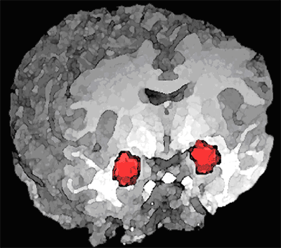

脳と意識
思い出すたびに、記憶は少しずつ変わる。2000年、ニューヨークの神経科学者がラットの脳で証明したのは、「覚えている」という行為そのものが記憶を壊し、書き直しているという事実だった。
カリム・ネーダーが記憶の再固定化を実験的に実証。Nature誌に発表
同年の世界:ヒトゲノムの概要配列が完成。シドニー五輪開催。米大統領選でブッシュ対ゴアが僅差で争い、最高裁が結果を左右した
2000年のNature論文以降、ラットからヒト、無脊椎動物まで種を超えて再現された現象。PTSD治療への応用研究もすでに臨床試験の段階に入っている。
子どもの頃の夏休みの記憶がある。祖父母の家の縁側で、スイカを食べた。種を庭に飛ばした。蝉が鳴いていた——と思う。でも、本当に蝉は鳴いていただろうか。種を飛ばしたのは自分だっただろうか。それとも、何度も思い出すうちに、別の夏の断片が混ざり込んだのだろうか。
誰にでも、こういう記憶がある。鮮明なのに、どこか辻褄が合わない。家族に確かめると、「それは別の年の話だよ」と言われる。細部が違う。場所が違う。ときには、出来事そのものが存在しなかったことさえある。
記憶は、ビデオテープのように保存されているわけではない。思い出すたびに、脳は記憶を一から組み立て直している。そして、その組み立て直しのたびに、少しずつ書き換わっている。
この記事では、短い場面を覚え、間に挟まれた「補足」を読み、もう一度同じ問いに答える体験を通じて、自分の記憶がどう書き換わるかを観察する。知識としてではなく、自分の脳で起きていることとして感じ取ることに意味がある。
覚えているとは、どういうことだろう。
多くの人は、記憶をビデオテープのようなものだと考えている。出来事が起きた瞬間に脳に「録画」され、思い出すときはその映像を「再生」する。鮮明な記憶ほど正確で、曖昧な記憶ほど不正確だ——直感的にはそう感じる。だが、この直感は間違っている。
記憶のビデオテープモデル(左)と再構築モデル(右)
記憶は保存ではない。再構築だ。思い出すという行為は、脳の中に散らばった断片——場所、感情、匂い、音、誰かの顔——をその場で組み立て直す作業にあたる。パズルのピースを毎回少し違う形で嵌め直している、と言えばいいだろうか。そして嵌め直すたびに、ピースの形が微妙に変わる。
"Memory works a little bit more like a Wikipedia page: you can go in there and change it, but so can other people."
記憶はもう少し、Wikipedia ページのようなものだ。自分で書き換えられるし、他人も書き換えられる。
— Elizabeth Loftus, "How reliable is your memory?" TEDGlobal (2013)
この「再構築」には、重大な副作用がある。組み立て直すたびに、今の感情、今の知識、今の文脈が混入する。10年前の出来事を思い出しているとき、脳は10年前の自分ではなく、今の自分の視点からその出来事を再現している。結果として、記憶は少しずつ——しかし確実に——変わっていく。
✗ よくある誤解
鮮明な記憶は正確な記憶である
✓ 実際は
鮮明さと正確さは相関しない。感情が強い記憶ほど鮮明に感じるが、細部の正確さは低いことがある
✗ よくある誤解
記憶違いは「忘れっぽい人」だけの問題
✓ 実際は
記憶力の良し悪しに関係なく起きる。記憶の再構築は脳の基本的な仕組みであり、例外はない
✗ よくある誤解
大事な記憶は改変されない
✓ 実際は
感情的に重要な記憶ほど頻繁に想起され、そのたびに再構築される。変容の機会はむしろ多い
1995年、認知心理学者のエリザベス・ロフタスElizabeth Loftus(1944–)
アメリカの認知心理学者。偽記憶の研究で知られ、目撃証言の信頼性に関する法廷での専門家証言を300件以上行った。は、記憶がどれほど容易に「作られる」かを示す実験を行った。24人の参加者に、幼少期の思い出を4つ書いた冊子を渡した。3つは家族から聞いた本当の出来事。残りの1つは研究者が作った完全な嘘——「5歳のとき、ショッピングモールで迷子になり、年配の女性に助けられた」という架空のエピソードだった。
エリザベス・ロフタス
Elizabeth Loftus, 1944–
アメリカの認知心理学者。カリフォルニア大学アーバイン校教授。偽記憶の形成と目撃証言の可謬性に関する研究で世界的に知られ、20世紀で最も影響力のある心理学者の一人に数えられる。
25%。4人に1人が、存在しない記憶を「思い出した」と報告した。驚くべきは、その思い出し方だった。参加者は研究者が伝えていない細部まで語り始めた——迷子になったときの服の色、助けてくれた女性の顔の特徴、泣いたときの感情。研究者が作った嘘を種にして、脳がまったく新しい記憶を「構築」していた。
ロフタスの「ショッピングモールの迷子」実験の構造と結果
2023年の追試では、サンプルサイズを5倍に拡大した上で同様の結果が得られた。記憶の専門家でなくても、年齢や学歴に関係なく、偽の記憶は形成される。これは「騙されやすい人」の話ではない。脳が記憶を「再構築」するという仕組みそのものに根ざした現象だ。
では、なぜ脳は記憶をこんなに不安定な形で扱っているのだろう。それを知る前に、自分の脳でそれを観察してみてほしい。次のセクションは、たった数分で完了する記憶のラボだ。
ここからは、記憶の再構築を自分の脳で体験するフェーズに入る。短い場面を読み、いくつかの問いに答え、間に「補足」を挟んで、もう一度同じ問いに答える。それだけで、自分の記憶がどう変わるかが見える。
ルール:メモは取らない。スマホで他のアプリに切り替えない。正解することではなく、自分の記憶を観察することが目的だ。
以下の場面を、20秒間できるだけ正確に覚えてほしい
平日の昼下がり、駅前のカフェで男性が文庫本を読んでいた。テーブルにはアイスコーヒーと、折りたたんだ傘。隣の席では、若い女性が手帳に何かを書き込んでいた。窓の外では、自転車に乗った宅配員が通り過ぎ、信号待ちのタクシーが一台、停まっていた。レジ前には犬を連れた老人が並んでいた。
長い間、神経科学の定説はこうだった。新しい記憶は最初は不安定だが、固定化固定化(consolidation)
新しい記憶がタンパク質合成を伴って安定化するプロセス。数時間から数日かかるとされる。というプロセスを経て安定した長期記憶になる。一度固定化された記憶は、もう変わらない。これが20世紀の大半を支配した「固定化理論」だった。
固定化理論(上)では記憶は一度安定したら不変。再固定化理論(下)では想起のたびに不安定化→再固定化のループが回る
2000年8月、ニューヨーク大学のカリム・ネーダーKarim Nader(1967–)
カナダの神経科学者。マギル大学教授。記憶の再固定化を2000年に実験的に実証し、記憶研究のパラダイムを変えた。は、この定説を覆す論文をNature誌に発表した。実験の設計はシンプルだった。ラットに特定の音と電気ショックを結びつける恐怖記憶を学習させ、1日後にその音を聞かせて記憶を「思い出させた」。そして思い出させた直後に、アニソマイシンアニソマイシン(anisomycin)
タンパク質合成を阻害する薬剤。新しい記憶の固定化にはタンパク質合成が必要なため、これを投与すると記憶が形成されなくなる。というタンパク質合成を止める薬剤を脳の扁桃体扁桃体(amygdala)
側頭葉の内側深部にあるアーモンド形の神経核。恐怖や情動の記憶処理の中枢として知られる。に注入した。

脳の冠状断面。左右対称に位置する扁桃体(赤)が、ネーダーの実験で薬剤を注入された場所だ。
National Institutes of Health / Public Domain
結果は衝撃的だった。記憶が消えた。固定化済みの——つまり「安定した」はずの長期記憶が、想起した後に薬剤を投与しただけで、失われた。同じ薬剤を、記憶を想起しなかったラットに投与しても、記憶は無傷だった。6時間後に投与した場合も効果はなかった。
つまり、こういうことになる。思い出す行為そのものが、一度安定した記憶を不安定な状態に戻す。そして不安定になった記憶は、新しいタンパク質合成によって再び安定化される。ネーダーはこのプロセスを再固定化(reconsolidation)と名づけた。
カリム・ネーダー
Karim Nader, 1967–
カナダ・マギル大学の神経科学者。2000年に記憶の再固定化を実験的に実証し、半世紀続いた「固定化は一度きり」のパラダイムを覆した。当時ジョゼフ・ルドゥーの研究室にいたポスドクで、指導教官に「その実験はやめておけ」と忠告されたことで知られる。
再固定化のメカニズム
何かのきっかけ——音、匂い、場所、会話——によって、固定化済みの長期記憶が呼び出される。この時点で記憶は「再び不安定な状態」に戻る。分子レベルでは、シナプスの結合が一時的に弱まり、記憶が書き換え可能な窓が開く。
不安定な窓が開いている間(数時間程度)、記憶は新しい情報を取り込むことができる。想起した瞬間の感情、周囲の状況、他の記憶との連想——これらが元の記憶に混入する。ネーダーの実験では、この窓の間にタンパク質合成を阻害すると記憶が消失した。
書き換えが完了すると、記憶は再びタンパク質合成を経て安定化する。ここで保存されるのは、元の記憶ではなく、更新後の記憶だ。次に思い出すとき呼び出されるのは、前回の想起で書き換えられたバージョンになる。これが繰り返されることで、記憶は想起のたびに少しずつ変容していく。
想起は「再生」ではなく「編集」にあたる。思い出すたびに記憶は不安定化し、現在の文脈に合わせて書き換えられ、再び保存される。私たちが「覚えている」のは、常に最新の書き換え版だ。
これは怖い話だと思う。いや、怖いというのは正確ではない。どこか——妙に納得してしまう。あの日の記憶が、年を経るごとに美しくなっていく理由。喧嘩の記憶が、いつの間にか相手の方が悪かったことになっている理由。それが一番怖い。
"Every time you remember something, it's an opportunity to change the content of it, that's just the way the brain is."
思い出すたびに、それは記憶の中身を変える機会になる。脳とはそういうものなんだ。
— Karim Nader, CBC News interview (2014)
記憶の再固定化という概念自体は、2000年に突然現れたわけではない。その種は半世紀前に蒔かれていた。
1968
ミサニンらの先駆的研究
ラットの固定化済み記憶を再活性化した後に電気ショックで消去できることを報告。しかし当時の学界は「固定化は一度きり」というパラダイムが支配的で、この結果は広く無視された。
1995
ロフタスの「ショッピングモールの迷子」実験
偽の記憶が容易に植え付けられることを実験的に示した。記憶が固定的でないことを行動レベルで証明したが、神経メカニズムは不明のままだった。
2000
ネーダーの再固定化実験
Nature誌に発表。想起後にタンパク質合成を阻害すると固定化済みの記憶が消失することを実証。指導教官のジョゼフ・ルドゥーは当初「その実験はやめておけ」と忠告したが、ネーダーは実行した。
2003
ヒトでの再固定化の確認
ウォーカーらが、ヒトの手続き記憶でも再固定化が起きることを示した。睡眠研究と結びつき、記憶の固定化と再固定化が睡眠中にも進行することが明らかになった。
2009–現在
臨床応用への展開
PTSDの治療に再固定化の仕組みを利用する試みが始まる。プロプラノロール(β遮断薬)を想起直後に投与し、恐怖記憶の感情的強度を弱める研究が進行中。
ここまで読むと、記憶の再構築は脳の「バグ」のように思える。だが、少し視点を変えてみる。
もし記憶が本当にビデオテープのように不変だったら、私たちは過去の出来事を現在の文脈に合わせて解釈し直すことができなくなる。失恋の記憶がいつまでも同じ鮮度で痛み続ける。トラウマが薄れることなく、毎日同じ強度で再生される。記憶が変わるからこそ、人は過去を「飲み込み」、前に進むことができるのかもしれない。
再固定化の研究者たちは、まさにこの仕組みを治療に利用しようとしている。PTSDに苦しむ患者に、トラウマ記憶を想起させた直後に薬理学的介入を行い、記憶の感情的な色合いだけを書き換える。記憶の内容は残るが、「怖い」という感情タグが外れる——そういう未来が、すでに臨床試験の段階に入っている。
古い写真も、取り出すたびに少しずつ違って見える。記憶もおそらく、そういうものなのだろう。
だが、この仕組みには暗い面もある。記憶の可変性は、外部からの操作に対しても脆弱であることを意味する。裁判における目撃証言、セラピーにおける誘導質問、SNS上の集合的記憶の書き換え——記憶が再構築されるという事実は、個人の内面だけでなく、社会のあり方にも影響を及ぼす。
私はこう考える。記憶の不正確さは欠陥ではなく、脳が「適応」するための仕組みなのだろう、と。いや、そう言い切ってしまうのは少し安易かもしれない。適応のために設計されたものが、結果的に冤罪を生んだり、自己欺瞞を助長したりする。進化は「良い結果」を目指して設計しない。ただ、生き残った仕組みだけが残る。
では、あなたの一番古い記憶は——本当にあなたのものだろうか。
映画『エターナル・サンシャイン』(2004)
ミシェル・ゴンドリー監督。失恋した男女が互いの記憶を消去する手術を受けるが、消えていく記憶の中で再び恋に落ちる。ネーダーの再固定化研究がこの映画の着想に影響を与えた可能性が指摘されている。記憶を消すことは可能か、消すべきかという問いを観客に突きつけた。
映画『ブレードランナー』(1982)/ 『トータル・リコール』(1990)
フィリップ・K・ディック原作のSF映画群。人工的に植え付けられた記憶が「本物の記憶」と区別できないという設定は、ロフタスの偽記憶研究が突きつけた問いと同じ構造を持つ。記憶がアイデンティティの基盤であるなら、偽の記憶を持つ者は「偽の人格」なのか。
Fear memories require protein synthesis in the amygdala for reconsolidation after retrieval
記憶の再固定化を実験的に証明した画期的論文。固定化済みの恐怖記憶が想起後にタンパク質合成阻害で消失することを示した。
The formation of false memories
「ショッピングモールの迷子」実験。偽記憶の形成可能性を初めて実験的に示した。
Lost in the mall again: a preregistered replication and extension of Loftus & Pickrell (1995)
サンプル123人での事前登録追試。原著の結果を再現し、35%が偽記憶を報告。
Reconsolidation and the Dynamic Nature of Memory
ネーダー自身による再固定化研究の包括的レビュー。固定化と再固定化の関係を整理。
The Myth of Repressed Memory（邦訳：抑圧された記憶の神話 — 偽りの性的虐待の記憶をめぐって）
偽記憶研究の第一人者 Loftus 自身の代表作邦訳。記事の Loftus 引用論文の背景にある実証研究と社会的論争(虐待告発の冤罪事件)を内側から記録。